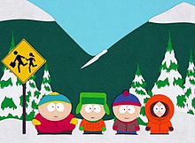

Introduction of SouthPark
South Park is an American adult animated sitcom created by Trey Parker and Matt Stone for the Comedy Central television network. Intended for mature audiences, the show has become famous for its crude language and dark, surreal humor that satirizes a wide range of topics. The ongoing narrative revolves around four boys:Stan Marsh, Kyle Broflovski, Eric Cartman, and Kenny McCormick and their bizarre adventures in and around the titular Colorado town.
Parker and Stone developed the show from two animated shorts they created in 1992 and 1995. The latter became one of the first Internet viral videos, which ultimately led to its production as a series. South Park debuted in August 1997 with great success, consistently earning the highest ratings of any basic cable program. Subsequent ratings have varied but it remains one of Comedy Central's highest rated shows, and is slated to air through at least 2016. The pilot episode was produced using cutout animation. All subsequent episodes are created with software that emulates the cutout technique. Parker and Stone perform most of the voice acting. Since 2000, each episode is typically written and produced during the week preceding its broadcast, with Parker serving as the primary writer and director. There have been a total of 245 episodes over the course of the show's 17 seasons.
The series has received numerous accolades, including five Primetime Emmy Awards, a Peabody Award, and numerous inclusions in various publications' lists of greatest television shows. The show's popularity resulted in a feature-length theatrical film, South Park: Bigger, Longer and Uncut which was released in June 1999, less than two years after the show's premiere, and became a commercial and critical success. In 2013, TV Guide ranked South Park the tenth Greatest TV Cartoon of All Time.
